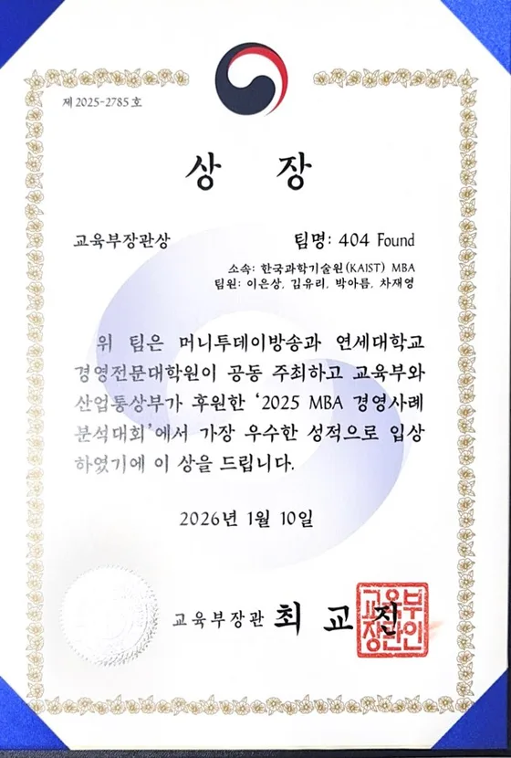
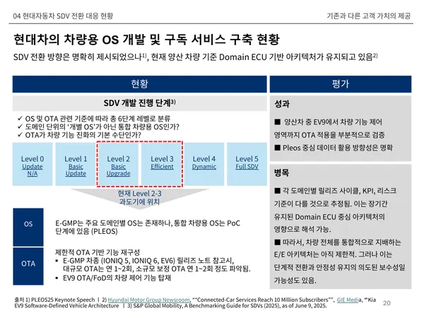
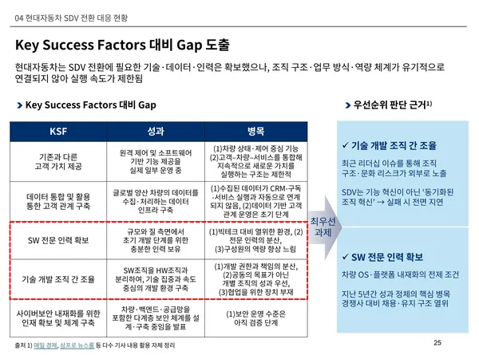
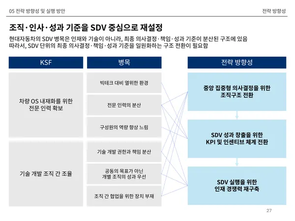
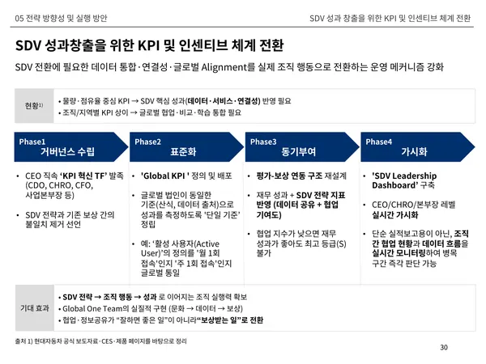
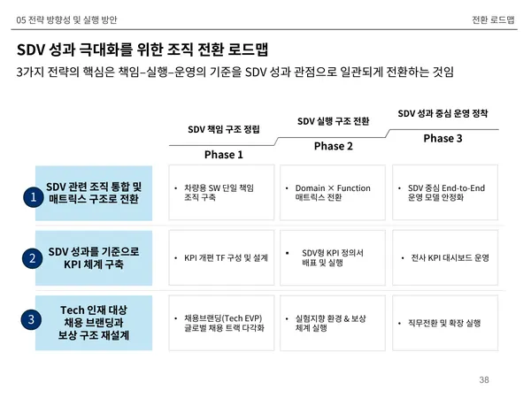

수상교육부장관상, 고용노동부 장관 표창
MBA 경영사례분석대회 대상 (교육부장관상)
'2026 대한민국 MBA 경영사례 분석대회'에서 KAIST MBA 동기들과 출전하여 교육부 장관상을 수상하였습니다. 현대자동차가 제시한 주제 중, '디지털 혁신 전략 (Digital Innovation)을 통한 기업 경영 전략의 효율성 확보 방안'을 선택하여 예선을 거쳐 서울대·연세대·고려대 등 국내 MBA 출전팀 중 본선에 오른 9팀 가운데 대상인 교육부 장관상을 받았습니다.
보고서 주제는 '현대자동차 Next Transformation: 데이터·조직·운영을 연결하는 SDV 혁신 프레임'으로, 자동차 산업의 부가가치가 하드웨어에서 소프트웨어 중심(SDV)으로 옮겨 가는 가운데, 현대자동차가 갖춘 기반을 더 빠른 전환으로 잇기 위한 전략을 발표하였습니다. DT를 단순 기술 도입이 아니라 조직의 문제로 보고, 누가 결정하고, 무엇을 성과로 인정하고, 어떤 인재를 머무르게 할지를 SDV에 맞게 다시 짜는 전략을 제안하였습니다.
- 중앙집중형 의사결정을 위한 조직 구조 전환: SDV 관련 조직을 하나로 묶어 설계부터 양산, 운영까지 끝까지 책임지는 단일 조직을 만들고, 영역(OTA, ADAS, 클라우드)과 기능(설계, 개발, 양산)을 엮은 매트릭스 구조로 문제를 개인 역량이 아니라 구조로 풀도록 제안했습니다.
- SDV 성과 창출을 위한 KPI·인센티브 체계 전환: 전환이 늦어지는 원인을 자원 부족이 아니라 조직 간 단절로 보고, 데이터 공유, 협업 기여도, 사용자 경험의 세 가지 평가 지표를 제안했습니다.
- SDV 실행을 위한 인재 경쟁력 재구축: 테크 기업으로의 채용 브랜딩, 개발자 성과의 자산화, 실패해도 평가에 불이익이 없는 기술 실험 제도를 제안했습니다.







팀 '404 Found'의 예선보고서 및 본선보고서 일부 내용입니다.
고용노동부 장관 표창
인사팀에서 채용·교육·급여·기업문화 제도를 개선하고, 담당하는 업무마다 오프라인 서류와 낡은 시스템을 새 시스템으로 바꿔 업무 생산성을 높인 공적으로 받았습니다.
| 심사 지표 | 주요 공적 |
|---|---|
| 일하는 방식 개선을 통한 생산성 향상 | 그룹 통합 교육정보시스템 개발 참여, HRM 인사급여 시스템 개발, 입·퇴사 서류 온라인화와 채용 시스템화, 전 채용 전형 화상면접 전환과 전사 순환 재택근무 기획 |
| 품질·서비스 향상을 통한 만족도 제고 | 해외 파견자를 위한 현지화 교육 신설, 당사 최초 청년내일채움공제 도입(신청자 14명 전원 가입), 계약직 포상제도 신설, 사내 본부공로상 수상 |
| 상생의 노사문화 구축 | 주52시간제 도입 임금·단체협상에서 급여·상여 체계 변경안을 설계하고 시뮬레이션해 임금협상 체결에 기여. 그룹 인사·기업문화 혁신 TF에서 수평적 호칭(전 직원 '프로'), 보직자 우선 휴가제도, 워킹맘을 위한 'Mom's Kit' 도입 |